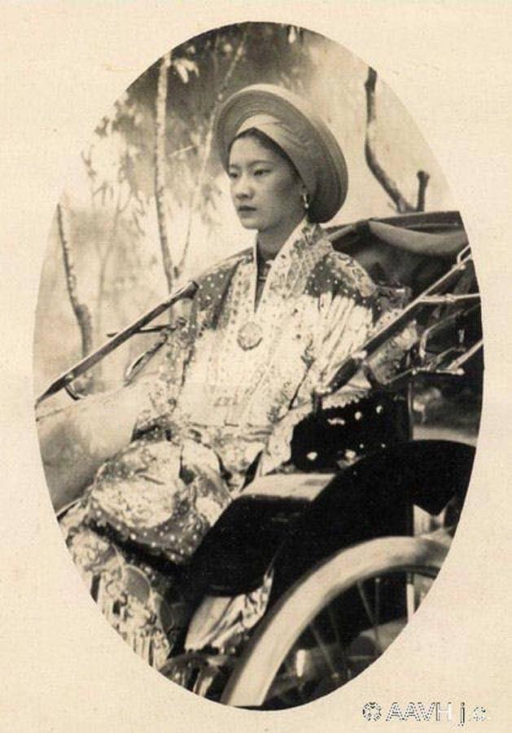

PHẦN HAI - Chương 1
Mọi chuyện đã được dẹp sang một bên. Tình yêu đã chiến thắng, dư luận cũng tạm ngưng. Những đám mây mù đã tan. Tất cả là nhờ những phẩm chất của bà hoàng hậu tương lai và đặc biệt là nhờ vào sự cương quyết đến cứng rắn của vua Bảo Đại.
Cả thành phố Huế đang đón chờ một biến cố có một không hai trong lịch sử triều Nguyễn, một mẫu nghi thiên hạ đến từ miền Nam với những sắc thái mới làm xốn xang lòng người. Thực ra tân hoàng hậu là người con gái miền Nam thì không phải là sự mới lạ. Bởi trước hoàng hậu Nam Phương đã có đến bảy phụ nữ miền Nam đã từng là chủ nhân của Hoàng thành Huế. Trong số đó nổi bật lên bà hoàng thái hậu Từ Dũ. Bà là người có nhiều ảnh hưởng đối với các vua: Thiệu Trị, Tự Đức, Hiệp Hòa, Kiến Phúc, Hàm Nghi. Trong số các phi tần, bà được hoàng tử Miên Tông khi lên ngôi vua, phong làm chánh phi và được phép ngồi phía sau bức mành nghe những lời vua bàn bạc với các quan đại thần. Ngoài việc giúp vua về chính trị, bà còn trông nom sắp đặt mọi việc trong cung với tư cách một nữ quan cao cấp. Bà rất nhân từ với các phi tần dưới quyền, không bao giờ ganh tỵ hay đố kỵ và thương yêu con của các phi tần khác như chính con của bà. Đó là lý do mà vua Thiệu Trị thường ban lời khen ngợi. Theo sách Đại Nam chính biên liệt truyện thì trước khi băng hà, vua Thiệu Trị đã nói với các đại thần: “Quí phi là người công dung ngôn hạnh, rất mực đoan trang, phước đức hiển minh, sau này con cháu ắt hưởng phúc dài lâu, lại tận tụy giúp trẫm trong bảy năm cầm quyền. Ý trẫm muốn sắc lập hoàng hậu cho chính vị trong cung, nhưng tiếc thay chưa kịp”. Vì thế, năm 1848, vua Tự Đức làm lễ tấn tôn bà là hoàng thái hậu.
Chính vì vậy cô gái miền Nam xinh đẹp lần này tiến cung và trở thành hoàng hậu không phải là chuyện lạ. Mà điều chưa từng có, chưa bao giờ xảy ra với triều đình Huế, đó là ngoài sắc đẹp chim sa cá lặn, hoàng hậu Nam Phương còn là một cô gái Tây học, con nhà danh gia vọng tộc lại là một người xuất thân từ gia đình theo đạo Thiên Chúa giáo. Bấy nhiêu thứ đụng vào những sắc thái truyền thống đã gắn bó với thành Huế từ cả mấy trăm năm nay. Huế cổ kính, Huế lãng mạn, Huế trầm mặc, Huế khép kín, Huế đẹp, Huế mộng mơ. Huế có tất cả, trừ nét hiện đại thông qua một làn gió mới.
Chuyện đó đã xảy ra.
Ngày hôm đó tiết trời xuân sáng láng. Mặc dù cuối xuân, trong các khu vườn nhà biệt thự tại thành phố Huế, hoa mai vẫn vàng ươm. Có lẽ đó là những cành mai nở muộn. Hoa mai vàng như làm cho Huế ngày hôm ấy càng rộn ràng thêm. Bình thường hoa mai đã được tao nhân mặc khách ưa chuộng bởi cái vẻ đẹp thanh khiết cao quý, hương hoa nhẹ nhàng thanh tịnh. Trời càng lạnh, hoa càng tỏa hương thơm hơn nên hương của hoa mai còn được gọi là “lãnh hương”. Hoa mai có sức chịu đựng giá sương, lạnh lẽo của tiết Đông hàn để mùa xuân ra hoa rực rỡ. Màu vàng của hoa mai tượng trưng cho sự vinh hiển cao sang, màu tượng trưng và dành riêng cho vua chúa. Màu vàng cũng là màu biểu tượng cho nòi giống Việt. Cho nên chẳng ngạc nhiên gì khi dân Việt phương Nam chọn mai vàng để đón xuân, đón cái Tết Nguyên đán thiêng liêng cổ truyền của dân tộc.
Có lẽ vua Bảo Đại và hoàng hậu Nam Phương đã nghĩ đến cảnh đẹp mùa xuân cùng với hình bóng của những bông mai dát vàng mặt đất để thi vị hóa cuộc hôn nhân không dễ gì quên giữa họ.
Đó là ngày 20 tháng 3 năm 1934, hôn lễ được tổ chức tại Huế. Khi đó Bảo Đại đúng hai mươi mốt tuổi còn Nguyễn Hữu Thị Lan chưa đầy hai mươi tuổi. Người con gái đến từ phương Nam mang theo cả hương thơm miền Nam quyết định bước qua ngưỡng cửa hoàng cung, vào Cấm Thành. Từ nay cả một cuộc đời mới sẽ mở ra trước mắt cô. Cô mỉm cười chấp nhận tình yêu – tình yêu gắn liền với định mệnh. Bỗng chốc cô trở thành hoàng hậu của cả nước. Từ nay, không còn ai nhắc đến cái tên Lan, Nguyễn Hữu Thị Lan hay cái tên Marie Thérèse Nguyễn Hữu Hào nữa. Cô là Nam Phương hoàng hậu.
Một đám cưới đã đi vào lịch sử nước nhà. Lễ rước dâu được tiến hành hết sức trang nghiêm. Triều đình đã cử đại diện vào Gò Công – quê của hoàng hậu Nam Phương – để xin và rước dâu theo phong tục Việt Nam. Dọc đường từ trong Nam ra tới Huế, các địa phương đặt bàn thờ, hương án và túc trực để đón đám rước hoàng hậu đi qua. Tiếng pháo chào mừng nổ liên tục từ trong Nam ra tới kinh đô Huế.
 .
.
Lòng tràn đầy cảm xúc suốt hành trình xen lẫn nỗi lo âu và niềm vui sướng hân hoan không gì tả xiết, hoàng hậu Nam Phương siết chặt tay mình chấp nhận những gì sắp tới xảy ra cho mình với ý nghĩ mình là người duy nhất có cái vinh dự làm mẫu nghi thiên hạ.
Về đến Huế, một buổi lễ sang trọng được tổ chức trước sự hiện diện của đình thần và đại diện nước Pháp tại điện Cần Chánh. Triều đình đứng thành hàng dọc theo tấm thảm hai màu vàng và đỏ dành riêng cho hoàng đế.
Hoàng hậu Nam Phương mặc áo thụng, chân đi hài mũi cong, đầu đội vương miện đính chín con phượng bằng vàng thật và nhiều ngọc ngà châu báu óng ánh. Bà đi đến giữa tấm thảm, cả triều đình cúi rạp đầu vái chào. Với một vẻ đẹp lộng lẫy, bà đi thẳng vào phòng lớn giữa lúc nhà vua đang ngồi trên ngai vàng. Sau đó, hoàng đế và hoàng hậu sánh vai bước đi trong tiếng nhạc mừng qua Tử Cấm Thành và vào điện Kiến Trung, nơi ở và là nơi làm việc của hoàng đế. Trong cuốn hồi ký “Con rồng An Nam”, vua Bảo Đại đã viết về đám cưới của ông với bà Nam Phương: “Ngày cưới là ngày 20-3-1934. Đám cưới được cử hành trước triều đình và các đại diện của Pháp. Đó là một vấn đề mới mẻ, vì từ xưa tới nay chưa bao giờ như vậy. Tôi cũng có quyết định tấn phong ngay cho vợ tôi, tước hiệu là hoàng hậu, sau khi cưới, điều mà từ xưa, mẫu thân tôi chỉ được phong sau khi phụ hoàng đã chết. Tôi tấn phong cho vợ tôi là Nam Phương hoàng hậu, có nghĩa là hương thơm của miền Nam, đồng thời cũng theo một sắc dụ, tôi cho phép hoàng hậu được mặc áo màu vàng da cam, vốn chỉ dành riêng cho hoàng đế”.

.Hình ảnh về lễ cưới và lễ tấn phong có lẽ không bao giờ phai mờ trong tâm trí của hoàng hậu Nam Phương và của hoàng đế Bảo Đại kể cả sau này khi ông không còn giữ được lời hứa với vợ và đã phản bội bà. Khi ký ức đưa ông về với những ngày đầu chung sống hạnh phúc ấy, ông đã viết trong cuốn hồi ký của mình: “Lễ tấn phong được cử hành ngay tại điện Cần Chánh, là nơi vẫn dùng để thiết đại triều. Trước sân chầu có trải thảm đỏ và vàng, vẫn dùng để hoàng đế bước lên. Các quan triều thần đều tập hợp đủ mặt. hoàng hậu mặc trang phục màu vàng, đầu đội mũ kết trân châu bảo ngọc, đi hia mũi nhọn, tay cầm hốt ngà, từ từ tiến vào, qua hai hàng quan triều thần chào đón, để tiến tới ngai vàng tôi đang ngồi đợi. Đây là lần đầu tiên trong lịch sử nước tôi, một thiếu nữ đã một mình tiến cung như vậy. Khi đến trước mặt tôi, hoàng hậu khấu đầu làm lễ vái ba vái, rồi ngồi sang bên phải tôi, trên chiếc ngai vàng thấp hơn. Lễ tấn phong hoàn tất rất nhanh chóng. Tôi đưa hoàng hậu về điện Kiến Trung và ở đấy với tôi. Đến chiều, hoàng hậu tới triều kiến đức hoàng thái hậu. Đức bà rất hoan hỉ và tiếp đón niềm nở. Một kim sách được lập cho hoàng hậu và một sắc chỉ tấn phong được đem ra niêm yết ở Tòa sắc chỉ”.
Sau buổi lễ, lòng ngập tràn hạnh phúc vua đã đưa hoàng hậu về điện Kiến Trung mà trước đó ngài đã cho sửa chữa, cải tạo thành một cung điện có những tiện nghi mới theo tiêu chuẩn châu Âu.